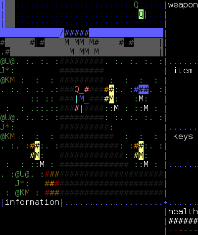

Terminal Mode Commodore 64 Emulator Disk Support
I have added support for D64 disk images to tmce64 and increased the version number to "0.3". In order to facilitate this several things needed to be added. The CIA emulation has been expanded to include the data ports, which are used to communicate with the disk drives. But the biggest task was to emulate the Commodore IEC serial bus that the KERNAL expects.
The disk and serial bus emulation is by no means complete, and is limited to be able to get a file listing (LOAD"$",8) and loading individual files. Fast loaders will not work and attempting to do anything fancy will probably freeze the emulator.
Stack trace support has also been added to the built-in debugger. There is even support for symbol names, but this is currently just a hardcoded list of certain serial bus functions. Bank switching for the VIC-II chip is also handled in case any programs changes the graphics memory areas.
These changes makes it possible to run the 8-Bit Guy's Attack of the PETSCII Robots in the emulator. Since conversion is done from PETSCII, the reality is closer to "ASCII Robots" though. Since sprites are not supported, use the "C64PETSCII" version of the game.
Some more screenshots:
